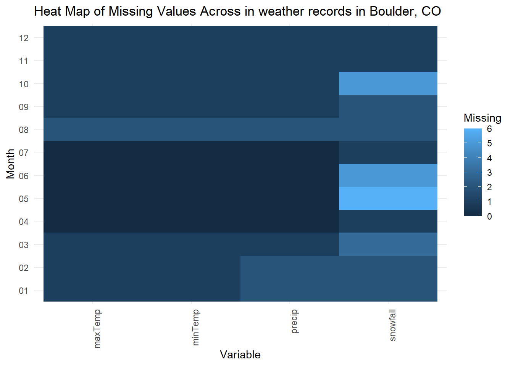

The first data set is from a project called: A Global Lake/Reservoir Surface Extent Dataset (GLRSED). This data was collected by the team of Bingxin Bai, Lixia Mu, Ge Chen, Yumin Tan
The original authors of this work created this GLRSED data set from a combination of multiple data sources including HydroLAKES, GRandD (GRD), and OpenStreetMap. Each of those respective data sets were incomplete or had spatial inconsistencies, necessitating the merge of the data sets. They overlayed it with mountain data to identify the lakes and reservoirs in the mountains and used other information to indicate whether the lakes were source by glaciers.
This is the surface extent data of over 2.17 million reservoirs and lakes found globally. This spatial extent data is important as it allows one to measure the expansion of lakes as glaciers melt - in other words, use it as a proxy to measure the effects of climate change.
There are 23 different ariables in the data
3 different Lake IDs and their corresponding join flag./
HylakID and its join flag
GRAND_ID and its join flag
OSM_ID and its join flag
The ID is present depending on the original source from which the data oriented (Hydrolakes, GRD, OpenStreetMAP). Therefore, not all obervations will have all the Laked
The main variables of interest are as follows:
Shore Length
Lake Area
Longitude
Latitude
Country
Continent
Mountain (flag)
Glacier (flag)
Permafrost (flag)
There are other variables/flags which will not be relevant to our visualization.
We found that this data is at a snapshot in time so is very static. What we need to do is look at the temporal evolution of the surface extent of the lakes/resevoirs. Thus we plan to merge this data with another data set that has temporal evolution of surface extent data.
The second data set is in article titled: “ReaLSAT, a global dataset of reservoir and lake surface area variations” located at the following link:https://www.ncbi.nlm.nih.gov/pmc/articles/PMC9213522/ The time series data is located at https://zenodo.org/records/761481 The authors are: Ankush Khandelwal, Anuj Karpatne, Praveen Ravirathinam, Rahul Ghosh, Zhihao Wei, Hilary A. Dugan, Paul C. Hanson, and Vipin Kumar.
Their work contains the monthly spatial variations of 681,137 different lakes. We plan to identify the lakes that are glacier fed and merge that with the information from the GLRSED data set.
We are also using an additional dataset from the Colorado Climate Center from Colorado State University containing the monthly max and min temperatures, precipitations and snowfall measured in a weather station in Boulder, CO from 1984 to 2022. This dataset comes in a .csv file.
2.1 Research plan
In this visualization project, we are using to complementary datasets:
GLRSED which contains spatial and origin (whether it is glacier or permafrost fed or not) for numerous lakes and water reservoirs
ReaLSAT which provides us with monthly variations of these water bodies with longitude from -180 to 0 from 1984 to 2020.
First, using GLRSED as a starting point, the objective will be to identify the proportion of freshwater reserves coming from melting ice worldwide. Mountain and polar regions are expected to be more dependent on glaciers for their freshwater supply. This first stage of exploration will enable us to identify critical regions whose freshwater reserves are strongly threatened by climate change.
We will then focus on a critical region for glacier fed fresh water bodies and a control region whose water resources do not depend on a glacier. Focusing on North and South America, we will then use the ReaLSAT dataset to compare variations in surface of fresh water lakes and reservoirs across a year between glacier or permafrost fed water bodies and some from a region assumed to be unaffected.
For a particular critical region and the selected control region, we can then study variations in the surface of freshwater available over the course of the year. A comparison between a high-precipitation year and a low-precipitation year will have to be carried out.
For this particular critical region, we will also study the variation in available freshwater over the entire available period i.e. 1984 to 2020, in an attempt to link these variations to variations in glacier volume. The expected global tendency to be observed is that the volume of available fresh water in the glacier fed bodies will decrease as the glacier retreats throughout the years.
2.2 Missing value analysis
2.2.1 GLRSED
Code
library(sf)
Warning: le package 'sf' a été compilé avec la version R 4.3.2
Linking to GEOS 3.11.2, GDAL 3.7.2, PROJ 9.3.0; sf_use_s2() is TRUE
Code
library(dplyr)
Attachement du package : 'dplyr'
Les objets suivants sont masqués depuis 'package:stats':
filter, lag
Les objets suivants sont masqués depuis 'package:base':
intersect, setdiff, setequal, union
Reading layer `glrsed_v1' from data source
`C:\Users\meuni\Documents\EDAV\final project\GLRSED_GeoPackage_V1.0\GLRSED_GeoPackage_V1.0\GLRSEDV1.gpkg'
using driver `GPKG'
Simple feature collection with 2171501 features and 22 fields
Geometry type: MULTIPOLYGON
Dimension: XY
Bounding box: xmin: -180 ymin: -55.86514 xmax: 180 ymax: 83.57595
Geodetic CRS: WGS 84
Code
library(ggplot2)# Specify the columns you want to plotselected_columns <-c("Name", "Hylak_ID", "GRAND_ID", "OSM_ID","Shore_len","Lake_area","Longitude","Latitude","Glacier")# Subset the dataset to include only the selected columnsselected_data <- GLRSED[selected_columns]# Count non-NA values per columnnon_na_counts <-colSums(!is.na(selected_data))# Create a data frame for plottingplot_data <-data.frame(column_names =factor(names(non_na_counts), levels =names(non_na_counts)),non_na_counts = non_na_counts)# Create a bar chartggplot(plot_data, aes(x = column_names, y = non_na_counts)) +geom_bar(stat ="identity", fill ="blue", alpha =0.7) +labs(title ="Number of Non-NA Values per Column",x ="Column Names",y ="Number of Non-NA Values" ) +theme_minimal()
From this graph, we can see that there is no missing data in the variables of interest. The majority of the data in GLRSED comes from the HydroLAKES dataset, the OpenStreetMap dataset comes second and only a minority comes from the GRD dataset.
According to the authors of the GLRSED dataset, there are a lot of missing values in the OpenStreetMap dataset which leads to lakes and reservoir not being included in GLRSED.
In the case of the GLRSED dataset, assessing the quality of the data is not easy as levels of accuracy vary depending on the source. For the HydroLAKES database, which is the amalgamation of several sources, includes topographic and remote sensing data, each with varying degrees of accuracy. For OSM data, its quality varies among different locations because it is created without any formal qualification.
2.2.2 RealSAT
In the rest of the work, we are only using a few lakes from RealSAT. The data is stored in .csv files. We have taken into account the available data in RealSAT when selected the lakes to study from GLRSED.
Code
US_glacier_timeseries <-read.csv("C:/Users/meuni/Documents/EDAV/final project/realsat/monthly_timeseries/US_glacier_timeseries.csv")US_lake_timeseries <-read.csv("C:/Users/meuni/Documents/EDAV/final project/realsat/monthly_timeseries/US_lake_timeseries.csv")boulder_glacier <-read.csv("C:/Users/meuni/Documents/EDAV/final project/realsat/monthly_timeseries/US_glacierBoulder_timeseries.csv")boulder_lake <-read.csv("C:/Users/meuni/Documents/EDAV/final project/realsat/monthly_timeseries/US_lakeBoulder_timeseries.csv")RealSAT <-merge(US_glacier_timeseries, US_lake_timeseries, by=c("year", "month"))%>%select(!glacier_671117)RealSAT <-merge(RealSAT, boulder_glacier, by=c("year", "month"))RealSAT<-merge(RealSAT, boulder_lake, by=c("year", "month"))RealSAT_longer <- RealSAT%>%pivot_longer(cols =c(starts_with("lake"), starts_with("glacier")), names_to ="lake", values_to ="value") %>%mutate(missing =ifelse(is.na(value), 1, 0))RealSAT_longer <- RealSAT_longer%>%summarize(missing=sum(missing), .by=c("month", "lake"))ggplot(RealSAT_longer, aes(x = lake, y = month, fill = missing)) +geom_tile() +labs(title ="Heat Map of Missing Values Across Months for Different Lakes",x ="Lake",y ="Month",fill ="Missing") +theme_minimal()+theme(axis.text.x =element_text(angle =90, hjust =1) )
A lot of data is missing during the winter months for the glacier-fed lakes. It can not be filled with the values available for normal lakes as they don’t follow the same seasonal trends.
Warning: NAs introduits lors de la conversion automatique
Code
boulder_weather$date <-as.Date(paste(boulder_weather$date, '01', sep='-'))boulder_weather$month <-format(as.Date(boulder_weather$date, format="%d/%m/%Y"),"%m")boulder_weather$year <-format(as.Date(boulder_weather$date, format="%d/%m/%Y"),"%Y")boulder_weather_month <- boulder_weather%>%summarize(minTemp=sum(is.na(minTemp)), maxTemp=sum(is.na(maxTemp)), precip=sum(is.na(precip)),snowfall=sum(is.na(snowfall)), .by=month)boulder_weather_longer <- boulder_weather_month%>%pivot_longer(cols =c(minTemp, maxTemp, precip, snowfall), names_to ="variable", values_to ="value")ggplot(boulder_weather_longer, aes(x = variable, y = month, fill = value)) +geom_tile() +labs(title ="Heat Map of Missing Values Across in weather records in Boulder, CO",x ="Variable",y ="Month",fill ="Missing") +theme_minimal()+theme(axis.text.x =element_text(angle =90, hjust =1) )

Code
boulder_weather_year <- boulder_weather%>%summarize(minTemp=sum(is.na(minTemp)), maxTemp=sum(is.na(maxTemp)), precip=sum(is.na(precip)),snowfall=sum(is.na(snowfall)), .by=year)%>%filter(year>1984& year<2020)boulder_weather_longer <- boulder_weather_year%>%pivot_longer(cols =c(minTemp, maxTemp, precip, snowfall), names_to ="variable", values_to ="value")ggplot(boulder_weather_longer, aes(x = variable, y = year, fill = value)) +geom_tile() +labs(title ="Heat Map of Missing Values Across in weather records in Boulder, CO",x ="Variable",y ="Year",fill ="Missing") +theme_minimal()+theme(axis.text.x =element_text(angle =90, hjust =1) )
This dataset is overall of good quality. Only a few values are missing across categories. Some years have very sparse data: 1989 and 1990. Overall the snowfall variable is the one with the most missing data.